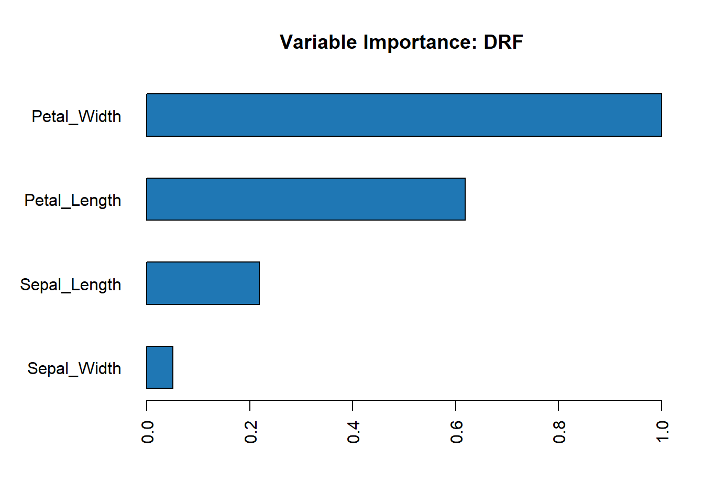

Sparkling Water (H2O) Machine Learning
Overview
The rsparkling extension package provides bindings to H2O’s distributed machine learning algorithms via sparklyr. In particular, rsparkling allows you to access the machine learning routines provided by the Sparkling Water Spark package.
Together with sparklyr’s dplyr interface, you can easily create and tune H2O machine learning workflows on Spark, orchestrated entirely within R.
rsparkling provides a few simple conversion functions that allow the user to transfer data between Spark DataFrames and H2O Frames. Once the Spark DataFrames are available as H2O Frames, the h2o R interface can be used to train H2O machine learning algorithms on the data.
A typical machine learning pipeline with rsparkling might be composed of the following stages. To fit a model, you might need to:
- Perform SQL queries through the sparklyr dplyr interface,
- Use the
sdf_*andft_*family of functions to generate new columns, or partition your data set, - Convert your training, validation and/or test data frames into H2O Frames using the
as_h2o_framefunction, - Choose an appropriate H2O machine learning algorithm to model your data,
- Inspect the quality of your model fit, and use it to make predictions with new data.
Installation
You can install the rsparkling package from CRAN as follows:
install.packages("rsparkling")Then set the Sparkling Water version for rsparkling.:
options(rsparkling.sparklingwater.version = "2.1.14")For Spark 2.0.x set rsparkling.sparklingwater.version to 2.0.3 instead, for Spark 1.6.2 use 1.6.8.
Using H2O
Now let’s walk through a simple example to demonstrate the use of H2O’s machine learning algorithms within R. We’ll use h2o.glm to fit a linear regression model. Using the built-in mtcars dataset, we’ll try to predict a car’s fuel consumption (mpg) based on its weight (wt), and the number of cylinders the engine contains (cyl).
First, we will initialize a local Spark connection, and copy the mtcars dataset into Spark.
library(rsparkling)## Warning: package 'rsparkling' was built under R version 3.4.2library(sparklyr)
library(h2o)
library(dplyr)
sc <- spark_connect("local", version = "2.1.0")
mtcars_tbl <- copy_to(sc, mtcars, "mtcars")Now, let’s perform some simple transformations – we’ll
- Remove all cars with horsepower less than 100,
- Produce a column encoding whether a car has 8 cylinders or not,
- Partition the data into separate training and test data sets,
- Fit a model to our training data set,
- Evaluate our predictive performance on our test dataset.
# transform our data set, and then partition into 'training', 'test'
partitions <- mtcars_tbl %>%
filter(hp >= 100) %>%
mutate(cyl8 = cyl == 8) %>%
sdf_partition(training = 0.5, test = 0.5, seed = 1099)Now, we convert our training and test sets into H2O Frames using rsparkling conversion functions. We have already split the data into training and test frames using dplyr.
training <- as_h2o_frame(sc, partitions$training, strict_version_check = FALSE)
test <- as_h2o_frame(sc, partitions$test, strict_version_check = FALSE)Alternatively, we can use the h2o.splitFrame() function instead of sdf_partition() to partition the data within H2O instead of Spark (e.g. partitions <- h2o.splitFrame(as_h2o_frame(mtcars_tbl), 0.5))
# fit a linear model to the training dataset
glm_model <- h2o.glm(x = c("wt", "cyl"),
y = "mpg",
training_frame = training,
lambda_search = TRUE)For linear regression models produced by H2O, we can use either print() or summary() to learn a bit more about the quality of our fit. The summary() method returns some extra information about scoring history and variable importance.
glm_model## Model Details:
## ==============
##
## H2ORegressionModel: glm
## Model ID: GLM_model_R_1510272550151_1
## GLM Model: summary
## family link regularization
## 1 gaussian identity Elastic Net (alpha = 0.5, lambda = 0.05468 )
## lambda_search
## 1 nlambda = 100, lambda.max = 5.4682, lambda.min = 0.05468, lambda.1se = -1.0
## number_of_predictors_total number_of_active_predictors
## 1 2 2
## number_of_iterations training_frame
## 1 100 frame_rdd_32_9f8c8e7e26090886a016a3b3bfdf40a2
##
## Coefficients: glm coefficients
## names coefficients standardized_coefficients
## 1 Intercept 32.997281 16.625000
## 2 cyl -0.906688 -1.349195
## 3 wt -2.712562 -2.282649
##
## H2ORegressionMetrics: glm
## ** Reported on training data. **
##
## MSE: 2.03293
## RMSE: 1.425808
## MAE: 1.306314
## RMSLE: 0.08238032
## Mean Residual Deviance : 2.03293
## R^2 : 0.8265696
## Null Deviance :93.775
## Null D.o.F. :7
## Residual Deviance :16.26344
## Residual D.o.F. :5
## AIC :36.37884The output suggests that our model is a fairly good fit, and that both a cars weight, as well as the number of cylinders in its engine, will be powerful predictors of its average fuel consumption. (The model suggests that, on average, heavier cars consume more fuel.)
Let’s use our H2O model fit to predict the average fuel consumption on our test data set, and compare the predicted response with the true measured fuel consumption. We’ll build a simple ggplot2 plot that will allow us to inspect the quality of our predictions.
library(ggplot2)
# compute predicted values on our test dataset
pred <- h2o.predict(glm_model, newdata = test)
# convert from H2O Frame to Spark DataFrame
predicted <- as_spark_dataframe(sc, pred, strict_version_check = FALSE)
# extract the true 'mpg' values from our test dataset
actual <- partitions$test %>%
select(mpg) %>%
collect() %>%
`[[`("mpg")
# produce a data.frame housing our predicted + actual 'mpg' values
data <- data.frame(
predicted = predicted,
actual = actual
)
# a bug in data.frame does not set colnames properly; reset here
names(data) <- c("predicted", "actual")
# plot predicted vs. actual values
ggplot(data, aes(x = actual, y = predicted)) +
geom_abline(lty = "dashed", col = "red") +
geom_point() +
theme(plot.title = element_text(hjust = 0.5)) +
coord_fixed(ratio = 1) +
labs(
x = "Actual Fuel Consumption",
y = "Predicted Fuel Consumption",
title = "Predicted vs. Actual Fuel Consumption"
)
Although simple, our model appears to do a fairly good job of predicting a car’s average fuel consumption.
As you can see, we can easily and effectively combine dplyr data transformation pipelines with the machine learning algorithms provided by H2O’s Sparkling Water.
Algorithms
Once the H2OContext is made available to Spark (as demonstrated below), all of the functions in the standard h2o R interface can be used with H2O Frames (converted from Spark DataFrames). Here is a table of the available algorithms:
| Function | Description |
|---|---|
h2o.glm |
Generalized Linear Model |
h2o.deeplearning |
Multilayer Perceptron |
h2o.randomForest |
Random Forest |
h2o.gbm |
Gradient Boosting Machine |
h2o.naiveBayes |
Naive-Bayes |
h2o.prcomp |
Principal Components Analysis |
h2o.svd |
Singular Value Decomposition |
h2o.glrm |
Generalized Low Rank Model |
h2o.kmeans |
K-Means Clustering |
h2o.anomaly |
Anomaly Detection via Deep Learning Autoencoder |
Additionally, the h2oEnsemble R package can be used to generate Super Learner ensembles of H2O algorithms:
| Function | Description |
|---|---|
h2o.ensemble |
Super Learner / Stacking |
h2o.stack |
Super Learner / Stacking |
Transformers
A model is often fit not on a dataset as-is, but instead on some transformation of that dataset. Spark provides feature transformers, facilitating many common transformations of data within a Spark DataFrame, and sparklyr exposes these within the ft_* family of functions. Transformers can be used on Spark DataFrames, and the final training set can be sent to the H2O cluster for machine learning.
| Function | Description |
|---|---|
ft_binarizer
|
Threshold numerical features to binary (0/1) feature |
ft_bucketizer
|
Bucketizer transforms a column of continuous features to a column of feature buckets |
ft_discrete_cosine_transform
|
Transforms a length NN real-valued sequence in the time domain into another length NN real-valued sequence in the frequency domain |
ft_elementwise_product
|
Multiplies each input vector by a provided weight vector, using element-wise multiplication. |
ft_index_to_string
|
Maps a column of label indices back to a column containing the original labels as strings |
ft_quantile_discretizer
|
Takes a column with continuous features and outputs a column with binned categorical features |
ft_sql_transformer
|
Implements the transformations which are defined by a SQL statement |
ft_string_indexer
|
Encodes a string column of labels to a column of label indices |
ft_vector_assembler
|
Combines a given list of columns into a single vector column |
Examples
We will use the iris data set to examine a handful of learning algorithms and transformers. The iris data set measures attributes for 150 flowers in 3 different species of iris.
iris_tbl <- copy_to(sc, iris, "iris", overwrite = TRUE)
iris_tbl## # Source: table<iris> [?? x 5]
## # Database: spark_connection
## Sepal_Length Sepal_Width Petal_Length Petal_Width Species
## <dbl> <dbl> <dbl> <dbl> <chr>
## 1 5.1 3.5 1.4 0.2 setosa
## 2 4.9 3.0 1.4 0.2 setosa
## 3 4.7 3.2 1.3 0.2 setosa
## 4 4.6 3.1 1.5 0.2 setosa
## 5 5.0 3.6 1.4 0.2 setosa
## 6 5.4 3.9 1.7 0.4 setosa
## 7 4.6 3.4 1.4 0.3 setosa
## 8 5.0 3.4 1.5 0.2 setosa
## 9 4.4 2.9 1.4 0.2 setosa
## 10 4.9 3.1 1.5 0.1 setosa
## # ... with more rowsConvert to an H2O Frame:
iris_hf <- as_h2o_frame(sc, iris_tbl, strict_version_check = FALSE)K-Means Clustering
Use H2O’s K-means clustering to partition a dataset into groups. K-means clustering partitions points into k groups, such that the sum of squares from points to the assigned cluster centers is minimized.
kmeans_model <- h2o.kmeans(training_frame = iris_hf,
x = 3:4,
k = 3,
seed = 1)To look at particular metrics of the K-means model, we can use h2o.centroid_stats() and h2o.centers() or simply print out all the model metrics using print(kmeans_model).
# print the cluster centers
h2o.centers(kmeans_model)## petal_length petal_width
## 1 1.462000 0.24600
## 2 5.566667 2.05625
## 3 4.296154 1.32500# print the centroid statistics
h2o.centroid_stats(kmeans_model)## Centroid Statistics:
## centroid size within_cluster_sum_of_squares
## 1 1 50.00000 1.41087
## 2 2 48.00000 9.29317
## 3 3 52.00000 7.20274PCA
Use H2O’s Principal Components Analysis (PCA) to perform dimensionality reduction. PCA is a statistical method to find a rotation such that the first coordinate has the largest variance possible, and each succeeding coordinate in turn has the largest variance possible.
pca_model <- h2o.prcomp(training_frame = iris_hf,
x = 1:4,
k = 4,
seed = 1)## Warning in doTryCatch(return(expr), name, parentenv, handler): _train:
## Dataset used may contain fewer number of rows due to removal of rows with
## NA/missing values. If this is not desirable, set impute_missing argument in
## pca call to TRUE/True/true/... depending on the client language.pca_model## Model Details:
## ==============
##
## H2ODimReductionModel: pca
## Model ID: PCA_model_R_1510272550151_3
## Importance of components:
## pc1 pc2 pc3 pc4
## Standard deviation 7.861342 1.455041 0.283531 0.154411
## Proportion of Variance 0.965303 0.033069 0.001256 0.000372
## Cumulative Proportion 0.965303 0.998372 0.999628 1.000000
##
##
## H2ODimReductionMetrics: pca
##
## No model metrics available for PCARandom Forest
Use H2O’s Random Forest to perform regression or classification on a dataset. We will continue to use the iris dataset as an example for this problem.
As usual, we define the response and predictor variables using the x and y arguments. Since we’d like to do a classification, we need to ensure that the response column is encoded as a factor (enum) column.
We can split the iris_hf H2O Frame into a train and test set (the split defaults to 75/25 train/test).
splits <- h2o.splitFrame(iris_hf, seed = 1)Then we can train a Random Forest model:
rf_model <- h2o.randomForest(x = x,
y = y,
training_frame = splits[[1]],
validation_frame = splits[[2]],
nbins = 32,
max_depth = 5,
ntrees = 20,
seed = 1)Since we passed a validation frame, the validation metrics will be calculated. We can retrieve individual metrics using functions such as h2o.mse(rf_model, valid = TRUE). The confusion matrix can be printed using the following:
h2o.confusionMatrix(rf_model, valid = TRUE)## Confusion Matrix: Row labels: Actual class; Column labels: Predicted class
## setosa versicolor virginica Error Rate
## setosa 7 0 0 0.0000 = 0 / 7
## versicolor 0 13 0 0.0000 = 0 / 13
## virginica 0 1 10 0.0909 = 1 / 11
## Totals 7 14 10 0.0323 = 1 / 31To view the variable importance computed from an H2O model, you can use either the h2o.varimp() or h2o.varimp_plot() functions:
h2o.varimp_plot(rf_model)
Gradient Boosting Machine
The Gradient Boosting Machine (GBM) is one of H2O’s most popular algorithms, as it works well on many types of data. We will continue to use the iris dataset as an example for this problem.
Using the same dataset and x and y from above, we can train a GBM:
gbm_model <- h2o.gbm(x = x,
y = y,
training_frame = splits[[1]],
validation_frame = splits[[2]],
ntrees = 20,
max_depth = 3,
learn_rate = 0.01,
col_sample_rate = 0.7,
seed = 1)Since this is a multi-class problem, we may be interested in inspecting the confusion matrix on a hold-out set. Since we passed along a validatin_frame at train time, the validation metrics are already computed and we just need to retreive them from the model object.
h2o.confusionMatrix(gbm_model, valid = TRUE)## Confusion Matrix: Row labels: Actual class; Column labels: Predicted class
## setosa versicolor virginica Error Rate
## setosa 7 0 0 0.0000 = 0 / 7
## versicolor 0 13 0 0.0000 = 0 / 13
## virginica 0 1 10 0.0909 = 1 / 11
## Totals 7 14 10 0.0323 = 1 / 31Deep Learning
Use H2O’s Deep Learning to perform regression or classification on a dataset, extact non-linear features generated by the deep neural network, and/or detect anomalies using a deep learning model with auto-encoding.
In this example, we will use the prostate dataset available within the h2o package:
path <- system.file("extdata", "prostate.csv", package = "h2o")
prostate_df <- spark_read_csv(sc, "prostate", path)
head(prostate_df)## # Source: lazy query [?? x 9]
## # Database: spark_connection
## ID CAPSULE AGE RACE DPROS DCAPS PSA VOL GLEASON
## <int> <int> <int> <int> <int> <int> <dbl> <dbl> <int>
## 1 1 0 65 1 2 1 1.4 0.0 6
## 2 2 0 72 1 3 2 6.7 0.0 7
## 3 3 0 70 1 1 2 4.9 0.0 6
## 4 4 0 76 2 2 1 51.2 20.0 7
## 5 5 0 69 1 1 1 12.3 55.9 6
## 6 6 1 71 1 3 2 3.3 0.0 8Once we’ve done whatever data manipulation is required to run our model we’ll get a reference to it as an h2o frame then split it into training and test sets using the h2o.splitFrame function:
prostate_hf <- as_h2o_frame(sc, prostate_df, strict_version_check = FALSE)
splits <- h2o.splitFrame(prostate_hf, seed = 1)Next we define the response and predictor columns.
y <- "VOL"
#remove response and ID cols
x <- setdiff(names(prostate_hf), c("ID", y))Now we can train a deep neural net.
dl_fit <- h2o.deeplearning(x = x, y = y,
training_frame = splits[[1]],
epochs = 15,
activation = "Rectifier",
hidden = c(10, 5, 10),
input_dropout_ratio = 0.7)Evaluate performance on a test set:
h2o.performance(dl_fit, newdata = splits[[2]])## H2ORegressionMetrics: deeplearning
##
## MSE: 280.7796
## RMSE: 16.75648
## MAE: 13.85877
## RMSLE: 1.968329
## Mean Residual Deviance : 280.7796Note that the above metrics are not reproducible when H2O’s Deep Learning is run on multiple cores, however, the metrics should be fairly stable across repeat runs.
Grid Search
H2O’s grid search capabilities currently supports traditional (Cartesian) grid search and random grid search. Grid search in R provides the following capabilities:
-
H2OGridclass: Represents the results of the grid search -
h2o.getGrid(<grid_id>, sort_by, decreasing): Display the specified grid -
h2o.grid: Start a new grid search parameterized by- model builder name (e.g.,
algorithm = "gbm") - model parameters (e.g.,
ntrees = 100) -
hyper_parameters: attribute for passing a list of hyper parameters (e.g.,list(ntrees=c(1,100), learn_rate=c(0.1,0.001))) -
search_criteria: optional attribute for specifying more a advanced search strategy
- model builder name (e.g.,
Cartesian Grid Search
By default, h2o.grid() will train a Cartesian grid search – meaning, all possible models in the specified grid. In this example, we will re-use the prostate data as an example dataset for a regression problem.
splits <- h2o.splitFrame(prostate_hf, seed = 1)
y <- "VOL"
#remove response and ID cols
x <- setdiff(names(prostate_hf), c("ID", y))After prepping the data, we define a grid and execute the grid search.
# GBM hyperparamters
gbm_params1 <- list(learn_rate = c(0.01, 0.1),
max_depth = c(3, 5, 9),
sample_rate = c(0.8, 1.0),
col_sample_rate = c(0.2, 0.5, 1.0))
# Train and validate a grid of GBMs
gbm_grid1 <- h2o.grid("gbm", x = x, y = y,
grid_id = "gbm_grid1",
training_frame = splits[[1]],
validation_frame = splits[[1]],
ntrees = 100,
seed = 1,
hyper_params = gbm_params1)
# Get the grid results, sorted by validation MSE
gbm_gridperf1 <- h2o.getGrid(grid_id = "gbm_grid1",
sort_by = "mse",
decreasing = FALSE)gbm_gridperf1## H2O Grid Details
## ================
##
## Grid ID: gbm_grid1
## Used hyper parameters:
## - col_sample_rate
## - learn_rate
## - max_depth
## - sample_rate
## Number of models: 36
## Number of failed models: 0
##
## Hyper-Parameter Search Summary: ordered by increasing mse
## col_sample_rate learn_rate max_depth sample_rate model_ids
## 1 1.0 0.1 9 1.0 gbm_grid1_model_35
## 2 0.5 0.1 9 1.0 gbm_grid1_model_34
## 3 1.0 0.1 9 0.8 gbm_grid1_model_17
## 4 0.5 0.1 9 0.8 gbm_grid1_model_16
## 5 1.0 0.1 5 0.8 gbm_grid1_model_11
## mse
## 1 88.10947523138782
## 2 102.3118989994892
## 3 102.78632321923726
## 4 126.4217260351778
## 5 149.6066650109763
##
## ---
## col_sample_rate learn_rate max_depth sample_rate model_ids
## 31 0.5 0.01 3 0.8 gbm_grid1_model_1
## 32 0.2 0.01 5 1.0 gbm_grid1_model_24
## 33 0.5 0.01 3 1.0 gbm_grid1_model_19
## 34 0.2 0.01 5 0.8 gbm_grid1_model_6
## 35 0.2 0.01 3 1.0 gbm_grid1_model_18
## 36 0.2 0.01 3 0.8 gbm_grid1_model_0
## mse
## 31 324.8117304723162
## 32 325.10992525687294
## 33 325.27898443785045
## 34 329.36983845305735
## 35 338.54411936919456
## 36 339.7744828617712Random Grid Search
H2O’s Random Grid Search samples from the given parameter space until a set of constraints is met. The user can specify the total number of desired models using (e.g. max_models = 40), the amount of time (e.g. max_runtime_secs = 1000), or tell the grid to stop after performance stops improving by a specified amount. Random Grid Search is a practical way to arrive at a good model without too much effort.
The example below is set to run fairly quickly – increase max_runtime_secs or max_models to cover more of the hyperparameter space in your grid search. Also, you can expand the hyperparameter space of each of the algorithms by modifying the definition of hyper_param below.
# GBM hyperparamters
gbm_params2 <- list(learn_rate = seq(0.01, 0.1, 0.01),
max_depth = seq(2, 10, 1),
sample_rate = seq(0.5, 1.0, 0.1),
col_sample_rate = seq(0.1, 1.0, 0.1))
search_criteria2 <- list(strategy = "RandomDiscrete",
max_models = 50)
# Train and validate a grid of GBMs
gbm_grid2 <- h2o.grid("gbm", x = x, y = y,
grid_id = "gbm_grid2",
training_frame = splits[[1]],
validation_frame = splits[[2]],
ntrees = 100,
seed = 1,
hyper_params = gbm_params2,
search_criteria = search_criteria2)
# Get the grid results, sorted by validation MSE
gbm_gridperf2 <- h2o.getGrid(grid_id = "gbm_grid2",
sort_by = "mse",
decreasing = FALSE)To get the best model, as measured by validation MSE, we simply grab the first row of the gbm_gridperf2@summary_table object, since this table is already sorted such that the lowest MSE model is on top.
gbm_gridperf2@summary_table[1,]## Hyper-Parameter Search Summary: ordered by increasing mse
## col_sample_rate learn_rate max_depth sample_rate model_ids
## 1 1.0 0.01 3 1.0 gbm_grid2_model_37
## mse
## 1 244.98771263058234In the examples above, we generated two different grids, specified by grid_id. The first grid was called grid_id = "gbm_grid1" and the second was called grid_id = "gbm_grid2". However, if we are using the same dataset & algorithm in two grid searches, it probably makes more sense just to add the results of the second grid search to the first. If you want to add models to an existing grid, rather than create a new one, you simply re-use the same grid_id.
Exporting Models
There are two ways of exporting models from H2O – saving models as a binary file, or saving models as pure Java code.
Binary Models
The more traditional method is to save a binary model file to disk using the h2o.saveModel() function. To load the models using h2o.loadModel(), the same version of H2O that generated the models is required. This method is commonly used when H2O is being used in a non-production setting.
A binary model can be saved as follows:
h2o.saveModel(my_model, path = "/Users/me/h2omodels")Java (POJO) Models
One of the most valuable features of H2O is it’s ability to export models as pure Java code, or rather, a “Plain Old Java Object” (POJO). You can learn more about H2O POJO models in this POJO quickstart guide. The POJO method is used most commonly when a model is deployed in a production setting. POJO models are ideal for when you need very fast prediction response times, and minimal requirements – the POJO is a standalone Java class with no dependencies on the full H2O stack.
To generate the POJO for your model, use the following command:
h2o.download_pojo(my_model, path = "/Users/me/h2omodels")Finally, disconnect with:
## [1] 1You can learn more about how to take H2O models to production in the productionizing H2O models section of the H2O docs.
Additional Resources
If you are new to H2O for machine learning, we recommend you start with the Intro to H2O Tutorial, followed by the H2O Grid Search & Model Selection Tutorial. There are a number of other H2O R tutorials and demos available, as well as the H2O World 2015 Training Gitbook, and the Machine Learning with R and H2O Booklet (pdf).